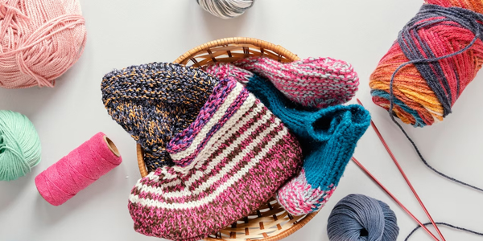
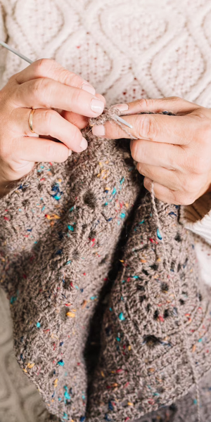
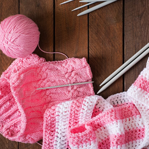
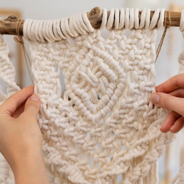
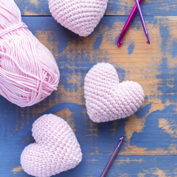
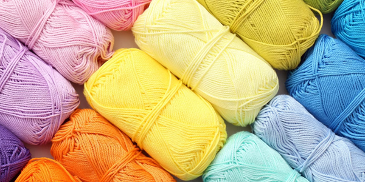

Sofía, una mujer de 45 años, ha convertido su hogar en un refugio de hilos y lanas,
donde su pasión por el tejido a mano cobra vida. Junto a su madre, se dedica con entusiasmo
a crear una variedad de productos, desde chalecos y suéteres hasta cobertores, utilizando su
habilidad y experiencia en el arte de la tejeduría.
Desde su infancia, Sofía ha sido testigo del poder del tejido gracias a su madre,
quien siempre confeccionaba prendas para sus hermanos mayores. Inspirada por esta
tradición familiar, Sofía ha abrazado el valor y la belleza del tejido artesanal,
llevando consigo el legado generacional de su familia.
En su hogar, cada hilo se entrelaza con amor y destreza, dando vida a
piezas únicas y acogedoras que reflejan el talento innato de Sofía.
Cada chaleco, suéter o cobertor es una obra maestra tejida a mano,
cuidadosamente diseñada y confeccionada para brindar calidez y comodidad a quienes los usan.
Aunque su dedicación al tejido ocupa un lugar especial en su vida, Sofía también encuentra
tiempo para ser una madre ejemplar. Sus hijos han crecido admirando cómo su madre crea belleza
a partir de hilos, y han aprendido los valores de paciencia, dedicación y creatividad que están presentes en cada pieza.
Además de tejer para su familia, Sofía ha logrado expandir su alcance y enviar sus productos a sus hermanos
en Concepción. Esta conexión a través del arte se convierte en un lazo tangible que une a la familia, a pesar de la distancia física.
La historia de Sofía es un testimonio vivo de cómo una pasión arraigada en la tradición familiar puede
dar forma a una vida llena de belleza y significado. Su dedicación a la tejeduría no solo es una expresión
de su talento, sino también un vínculo que trasciende las generaciones y transmite amor y calidez a través
de sus creaciones. Cada pieza que Sofía teje es una manifestación tangible de la conexión y el amor compartido
en su hogar, y un recordatorio del poder transformador del arte tejido a mano.

Grupo Cero
Copyrigth - All rights reserved 2022